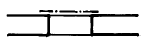
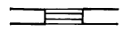
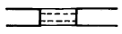
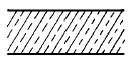
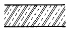
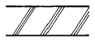
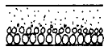
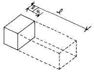

건축일반시공산업기사 (2002-09-08 기출문제)
1과목: 건축일반
1. 물체의 보이지 않는 부분의 모양을 표시하는데 사용하는 선의 명칭과 굵기로서 옳은 것은?
- 실선 - 가는선
- 실선 - 굵은선
- 파선 - 반선
- 일점쇄선 - 가는선
(정답률: 100%)

2. 건축제도에서 사용되는 투상법은?
- 제 1 각법
- 제 2 각법
- 제 3 각법
- 제 4 각법
(정답률: 100%)
3. 셔터달린 창의 평면표시 기호 중 옳은 것은?



(정답률: 100%)
4. 입면도 작성시 미리 알아두어야 할 사항과 관계가 먼 것은?
- 지붕의 물매
- 처마의 나옴
- 외부 마무리
- 부대 설비
(정답률: 100%)
5. 건축설계 제도시 단면용 재료구조 표시 기호중 모조석 표시 기호는?




(정답률: 알수없음)
6. 다음 중 지진에 대해 가장 약한 구조는?
- 나무 구조
- 벽돌 구조
- 철근콘크리트 구조
- 철골 구조
(정답률: 알수없음)
7. 조립식구조의 특성 중 옳지 않은 것은?
- 현장 거푸집공사가 절약되고 정밀도가 높고 강도가 큰 콘크리트 부재를 사용할 수 있다.
- 각 부품과의 접합부가 일체화되어 절점을 강하게 연결 할 수 있다.
- 기계화 시공으로 공사를 단기에 완성할 수 있다.
- 각 부재의 공장생산이 가능하여 대량 생산을 할 수 있다.
(정답률: 알수없음)
8. 조적조에서 벽량의 단위로 옳은 것은?
- m/m2
- m2/m
- ㎝/m2
- m2/㎝
(정답률: 알수없음)
9. 철근콘크리트보의 단부에 늑근을 특히 많이 넣는 이유는?
- 철근과 콘크리트의 부착력을 증가시키기 위하여
- 보에 일어나는 휨모우먼트에 저항하기 위하여
- 콘크리트의 강도를 높이기 위하여
- 보에 발생하는 전단력에 저항하기 위하여
(정답률: 90%)
10. 보강 블록조에서 테두리보를 설치하는 이유에 해당하지 않는 것은?
- 벽체를 일체화한다.
- 상부하중을 균등히 분포시켜 벽면의 균열을 방지한다.
- 집중하중을 받는 부분을 보강한다.
- 가로철근의 끝을 정착한다.
(정답률: 알수없음)
11. 마루널 접합에 이용되는 가장 적합한 쪽매는?
- 빗 쪽매
- 오늬 쪽매
- 맞댄 쪽매
- 제혀 쪽매
(정답률: 92%)
12. 지하실 안방수와 바깥방수의 차이점에 관한 기술 중 틀린 것은?
- 안방수는 수압이 큰 지하실에 적당하다.
- 안방수공사는 어느때나 공사를 할 수 있다.
- 바깥방수는 안방수에 비하여 공사비가 많이 든다.
- 안방수는 보호누름층이 필요하다.
(정답률: 100%)
13. 목조 왕대공지붕틀에서 압축력과 휨모우먼트를 동시에 받는 부재는?
- 빗대공
- 왕대공
- 평보
- 人자보
(정답률: 100%)
14. 가구식구조의 가새에 관한 기술 중 옳지 않은 것은?
- 가새의 경사는 45° 에 가까울 수록 유리하다.
- 가새는 수직력에 저항하는 부재이다.
- 가새와 샛기둥이 맞나는 위치에서는 대개 샛기둥을 따낸다.
- 가새의 단면은 큰 것이 반드시 좋지는 않다.
(정답률: 100%)
15. 플로우 테스트(flow test)란 콘크리트의 무엇을 알기 위한 것인가?
- 시공연도
- 강도
- 함수율
- 수밀성
(정답률: 알수없음)
16. 도급계약 제도 중에서 공사의 품질이 가장 저하될 가능성이 많은 도급계약 방식은?
- 일식 도급계약제도
- 분할 도급계약제도
- 공동 도급계약제도
- 공사별 도급계약제도
(정답률: 100%)
17. 열경화성 수지로 전기, 통신 기자재로의 사용이 60 %를 차지하고 있고 내수합판의 접착제로도 사용되는 수지는?
- 알키드 수지
- 멜라민 수지
- 요소 수지
- 페놀 수지
(정답률: 100%)
18. 네트워크 공정표에 사용되는 기호와 관련 없는 것은?
- EST
- EFT
- TF
- CPT
(정답률: 알수없음)
19. 동(銅)에 관한 설명중 옳지 않은 것은?
- 상온에서 전연성이 풍부하여 가공이 용이하다.
- 주조하기 어렵다.
- 철보다 내구성이 크다.
- 암모니아, 기타 알칼리에 강하다.
(정답률: 100%)
20. 시공계획을 세울때 해야할 사항과 가장 관계가 먼 것은?
- 공정표 작성
- 하자 보수
- 가설물 계획
- 시공기계의 선정
(정답률: 100%)
2과목: 조적, 미장, 타일시공 및 재료
21. KS규정에서 1종 붉은벽돌의 압축강도로 옳은 것은?
- 100kg/cm2 이상
- 120kg/cm2 이상
- 150kg/cm2 이상
- 210kg/cm2 이상
(정답률: 알수없음)
22. 표준형 벽돌(장려용)의 크기로 알맞은 것은? (단위 mm)
- 180 × 90 × 56
- 190 × 90 × 57
- 210 × 100 × 60
- 210 × 100 × 57
(정답률: 94%)
23. KS규정에서 정한 보통시멘트의 물배합 후 응결의 시작 시간은?
- 30분 후
- 1시간 후
- 1시간 30분 후
- 2시간 후
(정답률: 100%)
24. 그림과 같이 마름질한 벽돌의 모양을 무엇이라 하는가? (실선부분)

- 칠오토막
- 반반토막
- 반반절
- 이오토막
(정답률: 알수없음)
25. 벽돌아치 쌓기용 모르타르의 배합비는 어느 정도가 적당한가?
- 1 : 1
- 1 : 2
- 1 : 3
- 1 : 5
(정답률: 84%)
26. 조적조인 건축물 중 최상층 부분의 내력벽의 높이는?
- 3.0m 이하
- 3.5m 이하
- 4.0m 이하
- 4.5m 이하
(정답률: 알수없음)
27. 조적조에서 창문틀을 먼저 세우기로 할 때에는 그 밑까지 벽돌을 쌓고 몇 시간 경과한 다음에 세우는가?
- 12시간
- 16시간
- 18시간
- 24시간
(정답률: 알수없음)
28. 조적조에 있어서 통줄눈을 피하는 이유는?
- 외관을 좋게하기 위해서
- 시공을 편리하게 하기 위해서
- 응력을 분산시키기 위해서
- 부착력을 좋게하기 위해서
(정답률: 91%)
29. 조적조에서 철근콘크리트 인방보를 설치해야 할 개구부의 나비는 얼마 이상인가?
- 1.2 m
- 1.5 m
- 1.8 m
- 2.1 m
(정답률: 알수없음)
30. 콘크리트블록 쌓기에 관한 기술 중 옳지 않은 것은?
- 개구부 상부의 인방보는 양쪽벽에 20cm 이상 걸친다.
- 블록쌓기에서 살 두께가 두꺼운 쪽을 위로 오게한다.
- 하루쌓기 높이는 1.5m 이하로 한다.
- 블록전체에 물을 충분히 축여 쌓는다.
(정답률: 100%)
31. 내화벽돌 쌓기에 관한 기술 중 옳지 않은 것은?
- 줄눈나비는 가로, 세로 6mm를 표준으로 한다.
- 흙, 먼지 등을 청소하고 물을 축여서 사용한다.
- 통줄눈이 생기지 않게 쌓는다.
- 굴뚝, 연도 등의 안쌓기는 구조벽체에서 0.5B 정도 떼어 공간을 두고 쌓는다.
(정답률: 알수없음)
32. 창대쌓기에서 창대벽돌은 윗면이 몇도 내외로 경사지게 쌓는가?
- 7.5°
- 10°
- 12.5°
- 15°
(정답률: 알수없음)
33. 벽돌구조에서 내력벽 쌓기방식 중 가장 튼튼한 쌓기법은?
- 불식쌓기
- 미식쌓기
- 영식쌓기
- 화란식쌓기
(정답률: 알수없음)
34. 배합비 1:3의 시멘트모르타르를 만들 경우 1m3당 인부는?
- 0.5인
- 0.8인
- 1인
- 1.2인
(정답률: 알수없음)
35. 표준형 시멘트벽돌로 벽두께 1.5B, 벽면적 100m2 을 쌓을 때 공사장에 반입하여야 할 적당한 벽돌수량은?
- 13710 매
- 14920 매
- 19540 매
- 23520 매
(정답률: 알수없음)
36. 콘크리트 블록조에서 블록수량 산출시 할증률은 얼마로 산정하는가
- 2%
- 4%
- 6%
- 8%
(정답률: 알수없음)
37. 높이 2m, 길이 10m 되는 블록벽을 기본형 블록(190×190× 390)을 사용하여 쌓는데 필요한 블록공의 품은? (단, 보조원 품은 제외)
- 1인
- 2인
- 3인
- 4인
(정답률: 알수없음)
38. 벽돌벽의 균열 원인이 아닌 것은?
- 벽체의 불균형 배치
- 기초의 부동침하
- 문골의 불균형 배치
- 벽돌의 흡수율
(정답률: 알수없음)
39. 조적구조에서 대린벽 사이의 개구부의 폭의 총합계는 벽길이의 얼마 이하로 해야 하는가?
- 1/5
- 1/4
- 1/3
- 1/2
(정답률: 알수없음)
40. 벽돌조 공간쌓기에서 연결재의 최대 수평거리는?
- 40cm
- 60cm
- 75cm
- 90cm
(정답률: 70%)
3과목: 안전관리
41. 조적조에서 벽량을 옳게 설명한 것은?
- 전체벽의 면적에서 개구부의 면적을 뺀 면적
- 벽면적과 바닥면적과의 비
- 내력벽의 길이와 바닥면적과의 비
- 개구부 면적과 바닥면적과의 비
(정답률: 알수없음)
42. 콘크리트블록조에서 와이어메쉬(wire mesh)는 어디에 쓰이는가?
- 수평줄눈
- 수직줄눈
- 웃인방
- 테두리보
(정답률: 90%)
43. 콘크리트블록쌓기 벽면적이 20m2 일때 소요되는 블록의 장수로 적당한 것은? (단, 블록의 종류는 기본형 190×190×390mm이다.)
- 240장
- 260장
- 280장
- 300장
(정답률: 알수없음)
44. 표준형 벽돌로 두께 1.0B로 벽체를 쌓을때 1000매당 조적공의 품은?
- 1.0인
- 1.2인
- 1.4인
- 1.6인
(정답률: 알수없음)
45. 보통 벽돌의 품질시험은 다음중 어느 것을 측정하는가?
- 흡수율 및 압축시험
- 흡수율 및 전단강도
- 흡수율 및 인장시험
- 흡수율 및 휨모멘트시험
(정답률: 알수없음)
46. 돌쌓기에 쓰이는 시멘트모르타르의 배합비는?
- 1:3
- 1:5
- 1:7
- 1:9
(정답률: 알수없음)
47. 보강콘크리트 블록조의 시공에 대한 설명이다. 잘못된 것은?
- 세로근의 피복두께는 2cm 이상으로 한다.
- 통줄눈으로 하는 것이 시공이 편리하다.
- 2-3켜마다 와이어메시를 줄눈에 설치한다.
- 사춤콘크리트는 진동기로 충분히 다진다.
(정답률: 100%)
48. 벽돌조에서 벽돌 내력벽체의 두께는 벽높이의 얼마 이상으로 해야 하는가?
- 1/10
- 1/15
- 1/16
- 1/20
(정답률: 70%)
49. 벽돌벽체의 배관을 위한 홈파기를 할 때 홈 깊이는 벽두께의 얼마 이하인가?
- 1/5
- 1/4
- 1/3
- 1/2
(정답률: 알수없음)
50. 벽돌벽체의 치장줄눈으로 일반적으로 가장 널리 쓰이는 것은?
- 둥근줄눈
- 평줄눈
- 오목줄눈
- 내민줄눈
(정답률: 100%)
51. 가설공사에 관한 설명중 옳지 않은 것은?
- 비계의 결속선은 불에 달구어 누그러진 철선 #8∼#10으로 한다
- 비계의 결속선으로 담당원의 승인을 받아 새끼줄을 사용할 수도 있다.
- 나무비계 띠장 간격은 보통 2.5m 내외로 기둥에 결속한다.
- 비계다리의 위험한 곳에는 높이 75㎝의 난간을 설치한다.
(정답률: 73%)
52. 사고예방 기본원리 5단계인 시정책 적용은 3E를 완성하므로서 이루어 진다고 할 수 있다. 다음 중 3E에 해당되지 않는 것은?
- 기술(Engineering)
- 교육(Education)
- 경비절감(Economical)
- 독려(Enforcement)
(정답률: 알수없음)
53. 어떤 공장에 근로자 한사람의 근로시간이 1일에 8시간이고, 연간근로 일수가 300일이면 연간근로 시간수는 2,400시간이 된다. 이때 돗수율이 30이라고 하면 연천인율은 얼마가 되겠는가?
- 8.3
- 48
- 4,800
- 8,333
(정답률: 알수없음)
54. 재해 발생 원인 중 인적요인에 속하는 것은?
- 배열의 잘못
- 성능미달
- 경보오인
- 안전장치미비
(정답률: 알수없음)
55. 산업재해가 발생하였을때 취하여야 할 응급조치가 아닌 것은?
- 사고현장은 사고조사가 끝날때까지 그대로 보존해야한다.
- 부상자는 관계조사관이 온 다음 병원에 보낸다.
- 관계조사관이 올때까지 사고관련자끼리의 다툼을 막도록 한다.
- 현장에 관중이 모이거나 흥분이 고조되지 않도록 한다.
(정답률: 알수없음)
56. 안전표지에 사용되는 노란색은 어떤 용도로 쓰이는가?
- 위험, 금지
- 지시, 정돈
- 경고, 주의
- 방사능
(정답률: 93%)
57. 재해조사의 방법으로 옳지 않은 것은?
- 객관적 입장에서 조사한다.
- 책임을 추궁하여 같은 사고가 되풀이 되지 않도록 한다.
- 재해발생 즉시 조사한다.
- 현장상황은 기록으로 보존한다.
(정답률: 알수없음)
58. 연료와 산소의 화학적 반응을 차단하는 힘이 매우 강하여 소화능력이 우수하고, 특히 소화작업후의 피해가 적기 때문에 컴퓨터 등 값이 비싼 전기기계, 기구 등의 소화에 많이 사용되는 소화기는?
- 분말 소화기
- 이산화탄소 소화기
- 할론가스 소화기
- 강화액 소화기
(정답률: 알수없음)
59. 공장 내부의 도색에서 기계 전체에 칠하는 색으로 가장 적당한 것은?
- 녹색과 회색을 혼합
- 노랑과 흰색을 혼합
- 검정과 흰색을 혼합
- 빨강과 노랑을 혼합
(정답률: 100%)
60. 불안전한 행동을 하게 하는 인간의 외적인 요인이 아닌 것은?
- 근로시간
- 휴식시간
- 온열조건
- 수면부족
(정답률: 92%)